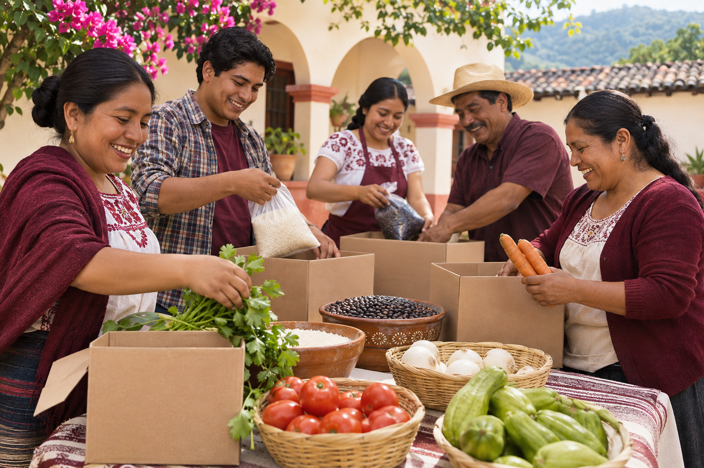
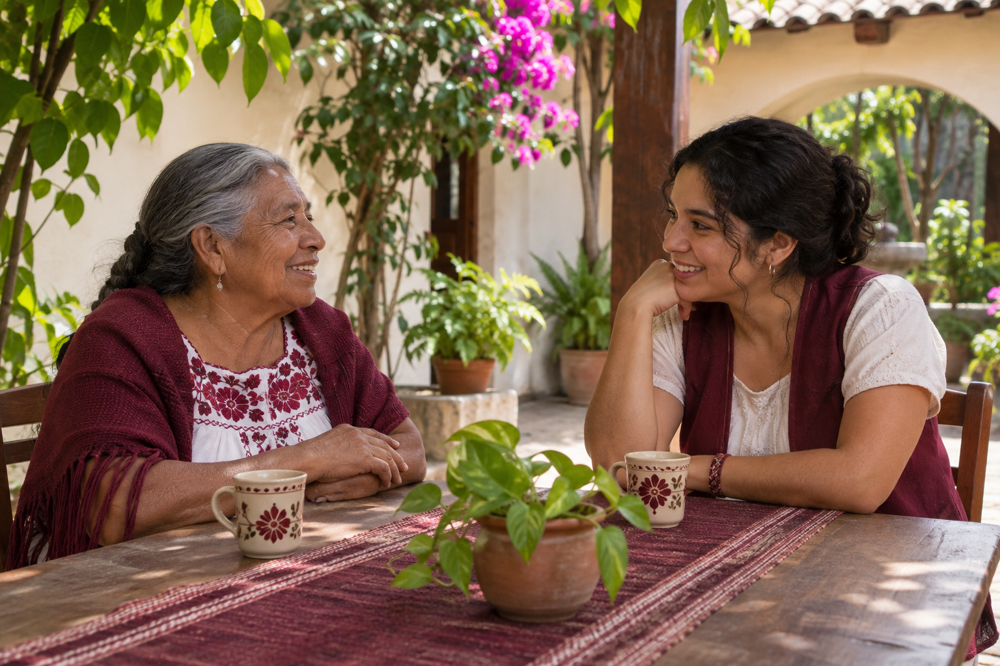
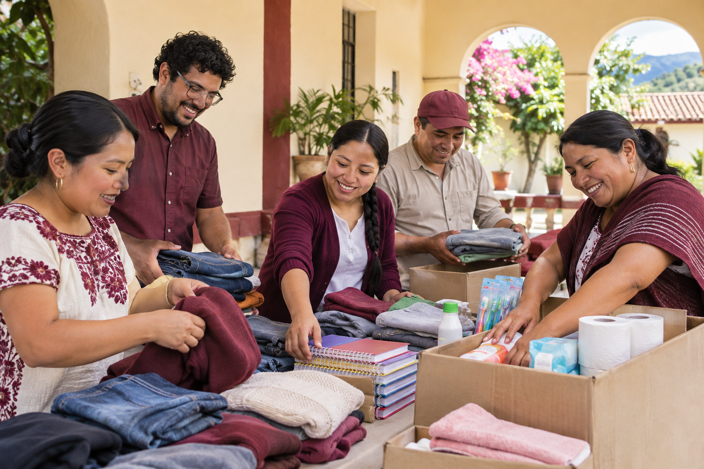

Alimentación · Propuesta
Una mesa con esperanza
Propuesta de apoyo alimentario para personas y familias en situación de vulnerabilidad, mediante la colaboración y la solidaridad comunitaria.
Me interesa colaborar →Proyectos
Un espacio para compartir las iniciativas, actividades y resultados de la asociación.
Ideas de proyectos para la asociación. Las escenas fueron creadas con IA y no representan actividades realizadas ni personas beneficiarias reales.

Propuesta de apoyo alimentario para personas y familias en situación de vulnerabilidad, mediante la colaboración y la solidaridad comunitaria.
Me interesa colaborar →
Propuesta de encuentros y acompañamiento para personas mayores, con espacios de escucha, cercanía y convivencia.
Me interesa colaborar →
Propuesta de jornadas de voluntariado para organizar apoyos en especie y fortalecer redes de colaboración comunitaria.
Me interesa colaborar →